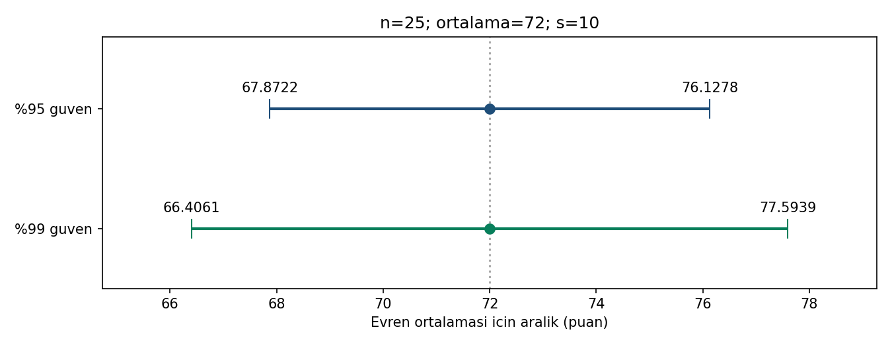

08 / GÜVEN ARALIKLARI
Tahmine bir belirsizlik aralığı ekle.
n = 25, ortalama = 72, s = 10 · tek özet satırı
Sorudan yönteme
Örneklem ortalaması 72 ise evren ortalamasını hangi aralıkla tahmin ederiz? Daha yüksek güven düzeyinin bedeli nedir?
Güven aralığı: x̄ ± t* × s/√n. Burada SE = 2 ve serbestlik derecesi 24’tür. %95 için t* = t(0,975; 24), %99 için t* = t(0,995; 24).
Gör, karşılaştır, yorumla

%95 güven aralığı [67,8722; 76,1278], %99 güven aralığı [66,4061; 77,5939]. Aynı veriyle güven düzeyi yükseldikçe aralık genişler.
CSV’nin bir satırı bir öğrenciyi değil 25 gözlemin özetini temsil eder. %95 güven, yöntemin tekrarlanan örneklemelerdeki kapsama özelliğidir; bireysel puanların %95’ini kapsayan bir aralık değildir.
19 referans değerinin tamamı
Gösterim yuvarlatılmıştır; kodlar tam duyarlıklı CSV’yi kullanır.
| Grup | Ölçü | Değer |
|---|---|---|
| ozet | hacim | 25 |
| ozet | ortalama | 72 |
| ozet | orneklem_sd | 10 |
| ozet | standart_hata | 2 |
| ozet | serbestlik | 24 |
| GA95 | guven_duzeyi | 0.95 |
| GA95 | alpha | 0.05 |
| GA95 | kritik_t | 2.063898562 |
| GA95 | hata_payi | 4.127797123 |
| GA95 | alt_sinir | 67.87220288 |
| GA95 | ust_sinir | 76.12779712 |
| GA95 | genislik | 8.255594247 |
| GA99 | guven_duzeyi | 0.99 |
| GA99 | alpha | 0.01 |
| GA99 | kritik_t | 2.796939505 |
| GA99 | hata_payi | 5.59387901 |
| GA99 | alt_sinir | 66.40612099 |
| GA99 | ust_sinir | 77.59387901 |
| GA99 | genislik | 11.18775802 |
Aynı veri, üç yazılım
ZIP’i tamamen ayıklayın. Çalışma klasörü b08/ornek-01 olmalıdır. Kodlar bilgisayarınızda çalışır.
Python
py cozum.py --check --grafikNumPy, pandas, SciPy ve Matplotlib gerekir. Beklenen: 19 kontrol değeri eşleşiyor.
R / RStudio
Rscript --vanilla cozum.R --check --grafikStandart R yeterlidir. RStudio konsolunda source("cozum.R") yalnız hesapları gösterir; otomatik kontrol için:
kontrol_et(sonuc, read.csv("beklenen-sonuclar.csv", stringsAsFactors=FALSE))IBM SPSS 29 · kullanıcı sayısal kontrolü geçti
SPSS 29 adım adım kontrol rehberi
CD 'C:/.../b08/ornek-01'.
INSERT FILE='spss-dogrula.sps' ERROR=STOP.Sonra aynı klasörde terminalden:
py spss_karsilastir.py --surum 29 --rapor spss-sonuc.jsonSPSS dışa aktarımı olmadan bu kontrol geçmez. SPV çıktısını ve JSON raporunu birlikte saklayın.
Önce tahmin et, sonra açıkla
Standart sapma 10’dan 5’e düşer, n ve güven düzeyi aynı kalırsa aralık genişliği ne olur?
Gerekçeli yanıtı göster
Standart hata ve hata payı yarıya iner. Aralık merkezi 72 kalır; %95 aralık yaklaşık [69,9361; 74,0639] olur.
Doğrulama durumu
| Ortam | Durum |
|---|---|
| Python | 19 referans değeri; grafik üretimi ve hatalı girdi kontrolleri geçti. |
| R 4.3.3 | 19 referans değeri ve Python–R sonuç karşılaştırması geçti. |
| IBM SPSS | 19/19 kontrol kullanıcı ortamında geçti; başarılı konsol sonucu paylaşıldı. Ham JSON/CSV ve tam SPV günlüğü ayrıca incelenmedi. |
17 Eylül 2026. Sayısal uyum, araştırma varsayımlarının sağlandığını kanıtlamaz.